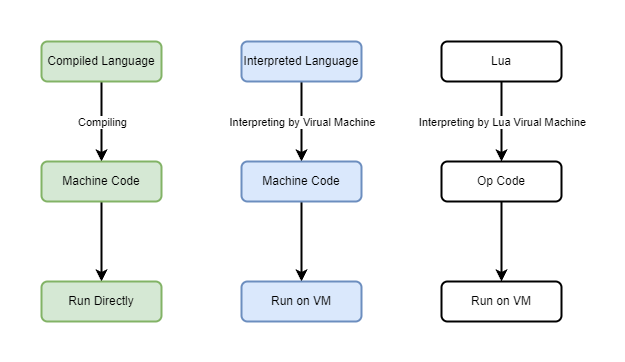
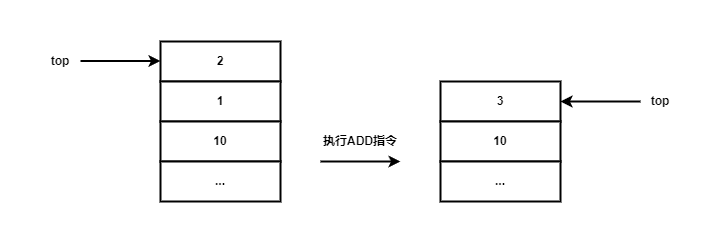
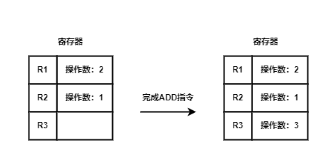

和其他语言的执行差异
一般语言分为编译型语言（Compiled Language）和解释型语言（Interpreted Language）。前者会先将代码编译为目标机器可运行的机器码，而后由目标机器直接运行，编译型语言的特点是在编译阶段实现跨平台，不同平台的编译结果不一样，由于它能由机器直接执行，速度会很快。解释型语言则是将代码交给解释器翻译执行，它的特点是由解释器来实现跨平台，平台的差异由语言自身的解释器来解决，由于它需要由解释器来执行，相比前者会慢不少。

Lua 作为一门解释型语言，它实现了自己的虚拟机充当解释器的角色，来解释执行 Lua 代码。这里有一点需要注意，Lua 会先将代码进行语法词法分析，生成虚拟机能看懂的字节码（后称OpCode），再由虚拟机执行。现在不少解释型语言和 Lua 采用了一样的思路，虽然最终是在解释器中执行，但是仍然预先制定了一套语言定制化的编译规则，将代码编译为对应的字节码后再交给解释器执行，这样做会加快代码的执行速度但是仍然有部分语言是采用直接解释执行。比如 Bash、AWK、早期的 PHP、Basic 等
Lua 的即时编译和JIT的区别
Lua 虽然是先编译为字节码，再交由虚拟机执行，但编译也是发生在运行阶段的，也就是说 Lua 是即时编译的。即时编译并不会妨碍它作为解释型语言在运行时可修改的特性，但 Lua 的即时编译和传统的 JIT 有所不同。
Lua 的编译执行过程分为两个阶段：
- 即时编译阶段（源代码 –> 字节码）
- 当 Lua 脚本被加载时，Lua 虚拟机会将源代码即时编译为字节码
- 这一步发生在运行时，即每次加载脚本时都会进行，这个编译过程由
lua_load函数完成
- 解释运行阶段（字节码 –> 执行）
- 编译后的字节码并不会被进一步编译为机器码，而是由 Lua 虚拟机逐条解释执行
Lua 的即时编译与真正的 JIT 编译的区别在于：Lua 即时编译的结果并非目标机器码，而是一种中间表示，只有它的虚拟机能够解释执行。
Lua 为何不采用 JIT 编译？
它的官方解释器（PUC-Rio Lua）并没有集成 JIT 编译器，原因如下：
- 跨平台性：
- Lua 以简单和轻量为核心设计目标，官方解释器支持多种平台，而字节码和虚拟机的实现更容易移植
- JIT 编译器需要针对特定的 CPU 架构生成机器码，移植性较差
- 嵌入式使用：
- Lua 主要被设计为嵌入式脚本语言，典型场景包括嵌入游戏引擎、应用程序等
- 字节码解释足以满足大部分需求，同时减少了 JIT 编译的复杂性和内存开销
- 性能需求：
- Lua 的性能在许多嵌入式场景下已经足够
- 对于更高性能需求的场景，可以使用 LuaJIT（Lua 的一个 JIT 编译器版本，将字节码直接编译为机器码，极大提升了性能）
虚拟机概览
除了 Lua，还有一些其他语言也实现了自己的虚拟机比如 Java 和 Python。一般一个语言的虚拟机的职责如下：
- 将源代码编译成虚拟机可识别执行的字节码
- 为函数调用准备调用栈
- 内部维持一个指令指针（IP，Instruction Pointer）来保存下一个将执行的指令地址。在 Lua 中，该 IP 对应的是 PC 指针，后续会讲
- 模拟一个 CPU 的运行：循环拿出由 IP 指向的字节码，根据字节码格式进行解码，然后执行
这样一来，一台抽象的计算机就出现了，这也是它们被称为虚拟机的原因。
虚拟机有两种实现方式：基于栈（stack-based）和基于寄存器（register-based），市面上常见的都是前者，而 Lua 属于后者。
基于栈的虚拟机
对于这种虚拟机，字节码的操作数从栈顶弹出，执行完操作后再压入栈顶，下图是一个加法操作后栈结构的变化：

这个操作对应的伪代码如下：
1 | POP 2 |
完成一个加法操作需要 4 条字节码，需要用额外的指令准备数据是这种设计的缺点。但是优点是指令不需要关心操作数的地址，在执行操作前已经将操作数准备在栈顶了
基于寄存器的虚拟机
和基于栈的虚拟机不同，这种虚拟机将操作数存放在 “CPU的寄存器” 中，这个寄存器不是物理意义上的寄存器，而是虚拟机的一种抽象实现。它实现前面的加法操作的示意图如下：

它对应的伪代码如下：
1 | ADD R1,R2,R3 #寄存器R1与R2相加结果保存在寄存器R3中 |
这种虚拟机的优点是，指令简短，但缺点是程序需要关注操作数的位置。Lua选择这种寄存器的主要目的是尽可能高效。
执行源码分析
luaL_dofile
这是 Lua 执行文件的调用函数，本身是个宏，等效于先调用
luaL_loadfile，再调用 lua_ocall：
1 |
luaL_loadfile 负责进行词法语法分析，lua_pcall 则将分析结果放到虚拟机中执行
luaL_loadfile
1 |
luaL_loadfile 本质是基于 luaL_loadfilex 的一个宏，它使用 NULL 作为模式参数而已，下文会讲到
来看 luaL_loadfilex：
1 | LUALIB_API int luaL_loadfilex (lua_State *L, const char *filename, |
概述：该函数用于加载 Lua 脚本文件或从标准输入读取脚本内容，并将其编译为 Lua 的字节码。接下来逐块分析：
- 得到文件名在栈上的位置
1 | int fnameindex = lua_gettop(L) + 1; /* index of filename on the stack */ |
- 处理
filename参数
1 | if (filename == NULL) { |
- 如果 filename 为 NULL，则从标准输入加载脚本并在栈顶压入
=stdin（标识输入来源） - 如果提供了 filename，尝试以只读模式打开文件。如果失败，则调用 errfile 报错
- 跳过文件中的注释
1 | if (skipcomment(&lf, &c)) /* read initial portion */ |
- 调用 skipcomment 跳过文件中的注释部分。c 保存第一个非注释字符
- 如果跳过注释后需要调整行号（如文件首行为注释），将换行符 \n 添加到缓冲区
- 如果是二进制文件，重新以二进制模式打开
1 | if (c == LUA_SIGNATURE[0] && filename) { /* binary file? */ |
如果文件的第一个字符与 LUA_SIGNATURE 匹配，表明可能是 Lua 的预编译二进制文件
- 将第一个字符存入缓冲区
1 | if (c != EOF) |
如果是非空字符，将其存入缓冲区，作为流的第一个有效字符
- 调用
lua_load
1 | status = lua_load(L, getF, &lf, lua_tostring(L, -1), mode); |
- 调用 lua_load 编译文件内容为 Lua 字节码
- 参数 getF 是一个回调函数，从 lf 中读取内容并提供给 lua_load
- 编译模式由 mode 指定，可能为 t（文本）、b（二进制）或 bt（自动检测）
- 检查文件读取错误
1 | readstatus = ferror(lf.f); |
- 使用 ferror 检查文件读取是否出错
- 如果有错误，将 Lua 栈恢复到调用此函数之前的状态，并返回错误码
- 清理和返回
1 | lua_remove(L, fnameindex); |
- 在成功加载文件后，移除栈上的文件名信息，保持栈的整洁
- 返回 lua_load 的结果（LUA_OK 表示成功）
lua_load
1 | LUA_API int lua_load (lua_State *L, lua_Reader reader, void *data, |
输入：
lua_State *L：当前状态机lua_Reader reader：回调函数，用于逐步读取代码块的内容void *data：传递给 reader 的用户数据，通常是文件流或内存中的字符串，在luaL_loadfilex传过来的是指定文件的文件流const char *chunkname：代码块的名字，用于错误提示const char *mode：编译模式，文本还是二进制
输出：
- 成功时返回 LUA_OK，并将编译后的 Lua 函数（LClosure）压入栈顶
- 失败时返回错误代码，并将错误信息压入栈顶
逐块分析：
- 加锁 && 缺省
chunkname
1 | lua_lock(L); |
很简单，第一步加锁确保线程安全，第二步给一个缺省的 chunkname
- 初始化 ZIO 流
1 | luaZ_init(L, &z, reader, data); |
z 是一个 ZIO
结构，它封装了读取代码块内容的逻辑，luaZ_init逻辑很简单，它将
reader 和 data 指定给这个 ZIO，确保用
reader 指定的方式读取 data 的文件内容
- 调用解析器
1 | status = luaD_protectedparser(L, &z, chunkname, mode); |
- 此函数负责对代码块的解析和编译，它运行在一个受保护的环境中，可以捕获并处理运行时错误
- 解析完成后，将生成的 Lua 函数（LClosure）压入栈顶
- 设置全局环境
1 | if (status == LUA_OK) { /* no errors? */ |
L->top - 1指向的是上一步生成的放在栈顶的 Lua 函数对象s2v理解为 StackValue to TValue，它将一个栈元素转化为通用的 TValue 结构体clLvalue进一步将 TValue 转化为LClosure(Lua闭包)- 如果有上值，获取全局表并将全局表设置为该函数的第一个上值
luaC_barrier确保垃圾回收的正确性，维护引用关系
- 释放锁并返回结果
1 | lua_unlock(L); |
luaY_parser
从 lua_load
继续深入，中间还有一些调用逻辑，我们不必深究其实现细节，解释的核心逻辑在
f_parser，它内部根据是文本还是二进制进一步划分了调用，我们以文本流的分支为例子，核心函数是
luaY_parser：
1 | LClosure *luaY_parser (lua_State *L, ZIO *z, Mbuffer *buff, |
- 声明分析状态
1 | LexState lexstate; |
lexstate 是词法分析的状态，funcstate
是当前解析函数的状态，这里不需要深究
- 创建闭包
1 | LClosure *cl = luaF_newLclosure(L, 1); /* create main closure */ |
这里创建好的闭包入栈是为了防止被垃圾回收机制错误回收
- 为词法分析器创建辅助表
1 | lexstate.h = luaH_new(L); /* create table for scanner */ |
同样，将其压入栈中以避免被垃圾回收
- 初始化函数原型
1 | funcstate.f = cl->p = luaF_newproto(L); |
- 调用
luaF_newproto创建一个函数原型（Proto） - 将原型分配给闭包的
p字段，并与funcState关联 - 使用
luaS_new创建并设置原型的source字段，用于存储代码块的名称 - 使用
luaC_objbarrier确保垃圾回收的正确性
- 设置解析上下文
1 | lexstate.buff = buff; |
- 初始化词法分析器和动态数据结构
- 调用
luaX_setinput设置词法分析器的输入流
- 调用主函数解析逻辑
1 | mainfunc(&lexstate, &funcstate); |
这是核心的解析函数，负责递归地解析整个代码块；它处理语法树的生成、作用域管理等复杂逻辑。
- 状态检查、清理辅助表并返回闭包
1 | lua_assert(!funcstate.prev && funcstate.nups == 1 && !lexstate.fs); |
这里需要注意，返回后辅助表已经从栈中移除了，但是闭包仍然在栈上。